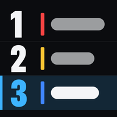
A side project by Josh RameyRace Day
I built Race Day to watch NASCAR with. It sits next to the TV and shows the whole field, what my drivers' cars are doing, and every team's radio as text, delayed so it lines up with the broadcast.
iPhone Duo · iPad · iPhone
Cup, O'Reilly Auto Parts, Craftsman Truck, ARCA Menards and Formula 1

Larson's last lap at Talladega, from his radio
October 25, 2026. Kyle Larson won the YellaWood 500 on a last-lap run through the middle. This is the #5 channel from that race: the spotter on the last lap, then the crew after the checkered flag.
…keep coming through the middle, bottom lane, keep coming, keep coming, want your push, keep coming, keep coming… yes, yes, yes, yes, hell yeah.
Stay with it driver, way to keep your composure, man am I proud of you, did not panic, take the shot.
From the #5 team's radio as it aired, trimmed at the ends. It's here only to show what the transcript does, and I'll take it down if asked.
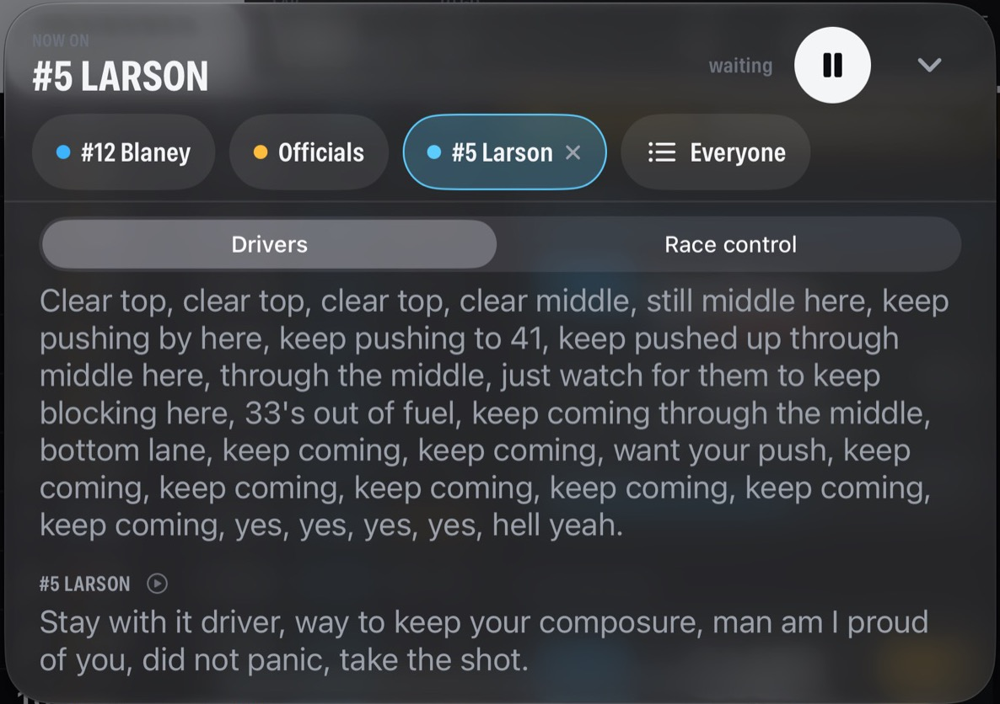
Every Cup team has its own channel, more than 40 with the officials. My server transcribes them on a Mac at home and holds each line back by the same delay as the TV. Lines get tagged (fuel, tires, handling, restarts), and tapping one plays it again. You can listen to two drivers at once, or let it scan to whoever's talking. It keeps playing with the phone locked.
Home: what's on, what's next, where everyone stands
The app opens on Home now. Across the top is a row of chips with each series' own logo: Cup, O'Reilly, Trucks, ARCA and F1. Pick one and it fills with that series' colour and everything below follows it.
The band at the top counts down to the next session. For 12 hours after a race it shows the winner instead, with a button to replay it. When something is on, it's a card at the top: one tap and you're in the race. Behind it all are light streaks, like a night race under the lights, tinted to match the chip.
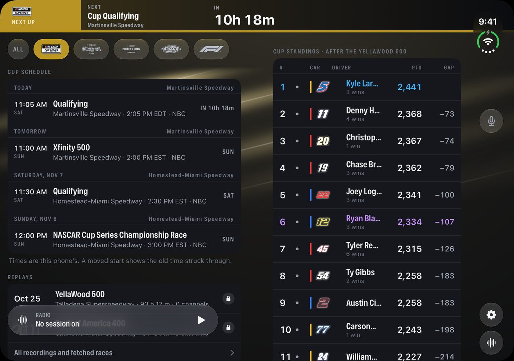
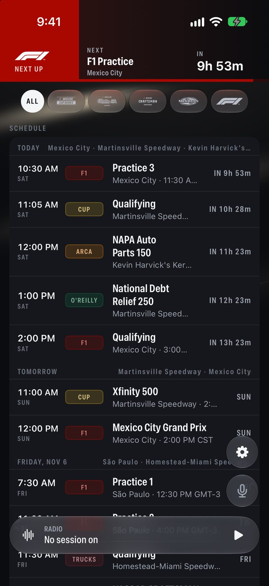
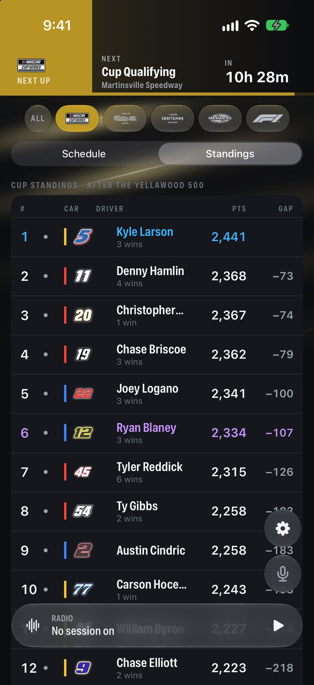
- Schedule
- Every session for all five series in one list, in my time zone with the track's local time beside it. A moved start shows the old time struck through.
- Standings
- Points for each NASCAR series with car badges and wins. For F1, drivers and constructors.
- Replays
- Races I've saved, each with its result: winner, laps led, cautions, lead changes.
- Badges
- NASCAR's own car-number art, cached on my server so replays work offline.
Duo opened flat with Cup picked, then Home and the Cup standings on iPhone · October 31, 2026
The running order, and my two drivers
The running order fills most of the screen and stays put. The numbers I keep checking during a run sit right next to each car. The two drivers I follow each get a card with what their car is doing right now, taken from its telemetry.
- Gaps
- To the leader and to the car ahead. Under half a second it turns blue, so battles stand out.
- Pace
- Last lap, average of the last five, laps on tires, stops, laps led.
- Cockpit
- Speed, gear, throttle and brake for each of my drivers, plus fuel laps left and the pit window.
- Lock Screen
- A Live Activity with the flag, the lap and where my drivers are, updated while the app or the radio is running.
- Flag
- Race control's latest message under the flag, and the white flag when the lap count says one to go.


iPad and folded Duo · Bank of America 400 at Charlotte, lap 184
Strategy, Track and Compare

Strategy
Where my drivers ran every lap with cautions shaded, every stop with the tires taken and what it gained or lost, and who's due to pit.

Track
Every car on the real track outline, placed from its GPS. Tap a car to follow it.

Compare
Pick any two drivers: the gap between them, both positions through the race, and who's better at what.
Formula 1 too
F1 comes from F1's own live timing, which my server listens to and records like the NASCAR feeds. In practice and qualifying the tower becomes a timing sheet: best lap, gap to the fastest, laps run, and the tyre each car is on, with a dot for the cars out on track.
For races it shows the order, gaps, laps down, pit stops, tyre age and the safety car or VSC under the flag. So far I've checked it against the US Grand Prix result and a live practice in Mexico City. A race weekend will tell me the rest.
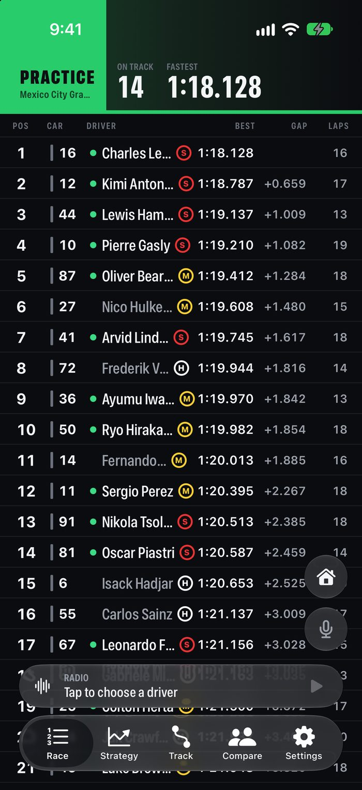
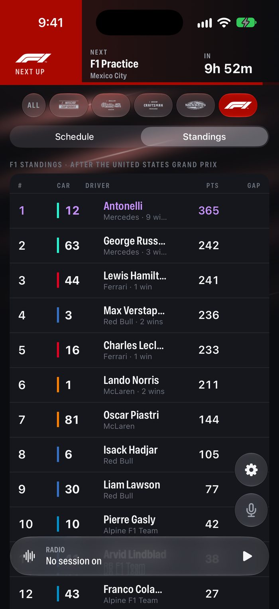
A layout for each way the Duo opens, and for iPhone
- Duo folded. One column, with Home, the intercom, the page tabs and the radio in the strip beside the clock.
- Duo open flat. Upright it's one long column. On its side the tower gets one page and my drivers the other.
- Duo half open like a laptop. The race on top, the page tabs and the radio deck below the fold, where your thumbs are.
- Duo open like a book. The race on the left page, my drivers and head to head on the right.
- Same places everywhere. Home and the race put their controls in the same spots in every posture, and folding mid-race keeps you where you were.
- Practice and qualifying. The tower turns into a timing sheet by best lap, with long-run pace.
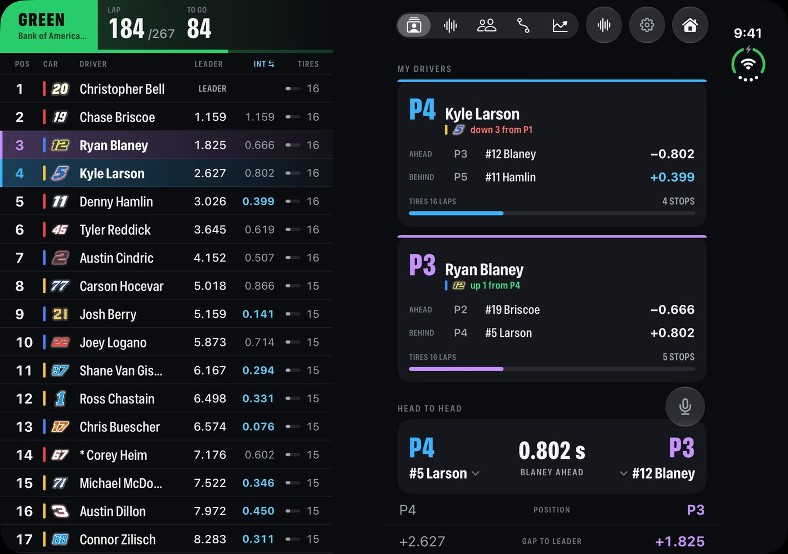
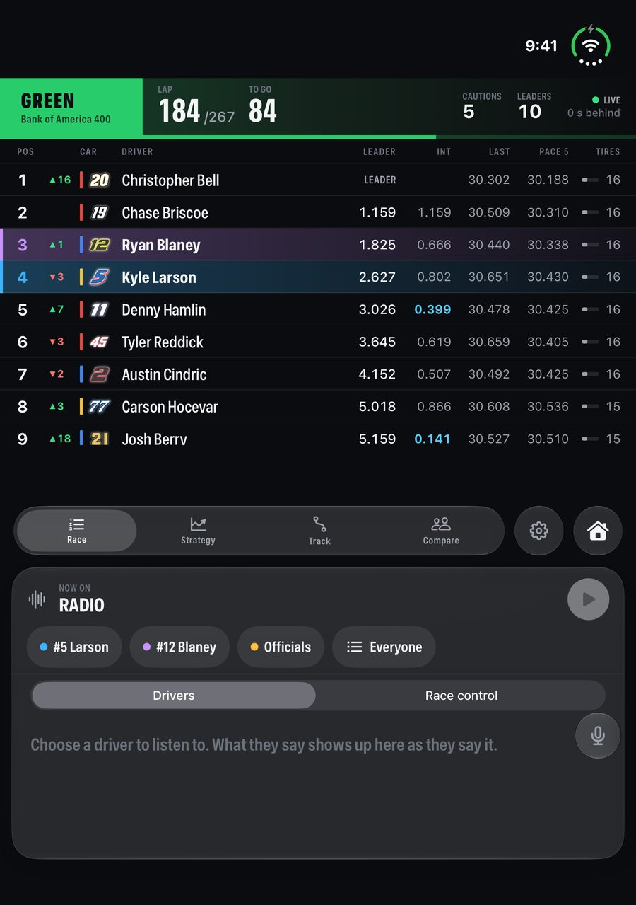

Duo open like a book, Duo half open like a laptop, and the Strategy page on iPhone
Talking to the person next to you at the track
At the track, cell service is weak and the cars drown everything out. With the intercom on, two phones become a headset intercom, so you can talk over the race. If there's enough data for it, each of you still hears your own team's radio underneath.
It goes phone to phone over Apple's peer-to-peer Wi-Fi, the same link AirDrop uses, so it doesn't need cell signal or a Wi-Fi network. Hold the button to talk or leave the mic open. Your radio dips while the other person talks. It works with AirPods, and if you walk out of range it finds the other phone again by itself.
The mic button is on every screen. The intercom opens over whatever you were looking at, Home or the race, and closing it puts you back exactly there.
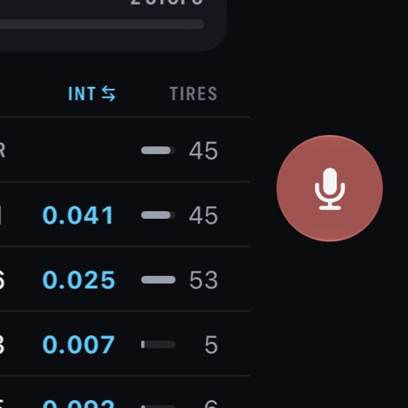
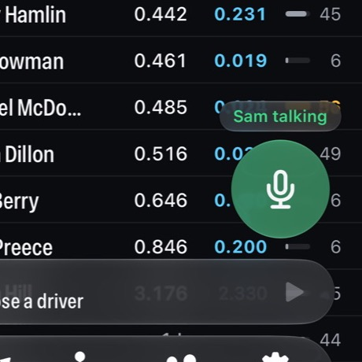
A Mac Studio in my house does the work
A server at home follows NASCAR's public live timing and the team radio, plus the timing for ARCA and F1. It keeps a copy of each session so I can rewatch a race later, radio included, and transcribes the radio on the Mac itself, with Whisper running on Apple silicon. It sends my devices one stream, held back to match the TV. Only my devices and a few friends' connect to it. Nothing is public and nothing is sold.
It can run more than one session at once. If an F1 race and a NASCAR race overlap, each gets its own stream and its own delay, and a chip in the race header switches between them. Opening a replay on your phone starts a room of your own, with that race's radio, so it doesn't change what anyone else is watching.
| NUMBER | WHAT IT IS |
|---|---|
| 17 s | The delay I set so the app lines up with my TV |
| ~2 s | How far the timing runs behind the live race before the TV delay is added |
| 5 | Series on Home: Cup, O'Reilly, Trucks, ARCA and F1 |
| 40+ | Radio channels in a Cup race: every team, plus officials |
- Timing and scoring NASCAR, ARCA, F1
- Car telemetry and GPS speed, gear, pedals
- Team radio transcribed on the Mac
- Delay buffer set to match the TV
- iPad, iPhone, Duo the same stream
Why this page exists
I'm a fan, not a company. I built this for myself and a few friends to watch races with. I'd like to show it to the people at NASCAR who work on fan and digital products, hear what they think, and learn whether there's a proper way to build on official timing and radio.
I built the same kind of thing for iRacing
A small reader on the sim rig sends the car's data across the house 30 times a second. The driver gets overlays on the rig, and the spotter on the second PC gets a big board: gaps, who's closing, iRating, and the "car right" call.
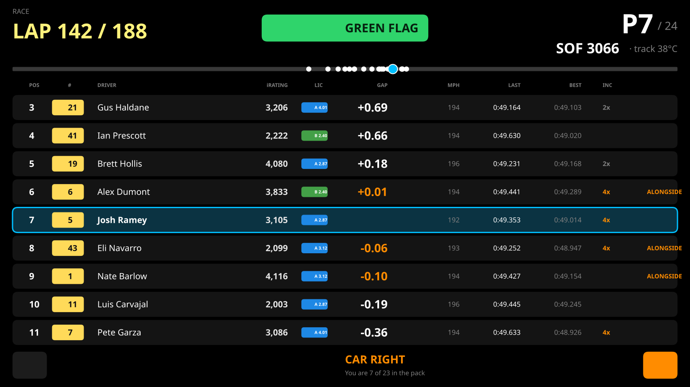
Spotter board on the second screen
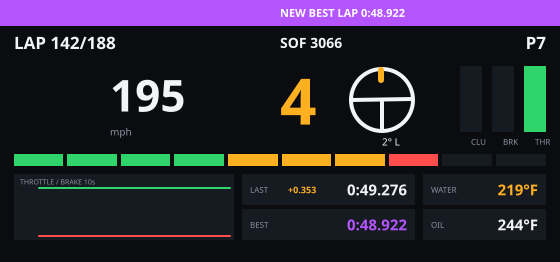
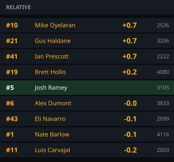
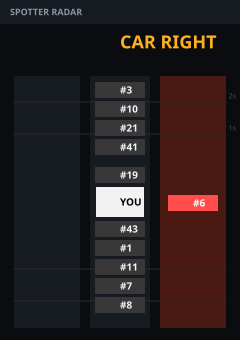
About this page. Race Day is a personal, non-commercial app I built for myself and a few friends. It isn't on the App Store, isn't sold, and isn't affiliated with, endorsed by or connected to NASCAR, its teams or its sponsors. Driver, team, race and sponsor names belong to their owners and are used only to describe real races. The Race Day screenshots are real sessions replayed from a test copy of my server through Apple's iPad, iPhone and iPhone Duo simulators: the 2026 Bank of America 400 at Charlotte, the 2026 YellaWood 500 at Talladega and first practice for the 2026 Mexico City Grand Prix. The schedule and standings are as they stood on October 31, 2026. The iRacing images are drawn by the real overlay code from a sample session; the other drivers' names are made up.